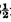
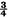
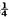
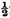

ON BORROWING WATCHES—THE PUTTY WATCH—THE GLASS—TWO KINDS OF MORTARS AND PESTLES—THE DUMMY WATCH—THE WATCH BAG—HOW TO REPRODUCE THE WATCH—THE LOAF—THE TARGET—ANOTHER TARGET—THE PLATE SCREEN—THE ADHESIVE WATCH: A JOKE—THE WATCH BOX—A NOVEL RABBIT WARREN—HOW TO CAUSE RABBITS TO DISAPPEAR—THE BRAN VASE—THE BRAN—THE WELSH “RABBIT”—THE SAUCEPAN AND COVER—THE HAT STOVE—THE FUEL—THE INGREDIENTS—THE RESULT—THE BIRD AND CARD.
Tricks with Watches.—The reader has doubtless been on the look-out for the chapter which shall initiate him in the art of pounding up a friend’s gold chronometer before his very eyes, and immediately afterwards restoring it whole. I have purposely introduced the subject so late in the day, because watches are very awkward things to perform with, and the performer should be tolerably expert before he touches them.
On borrowing a watch, it is always as well to do, or pretend to do, something with it that shall cause the greatest anxiety to the owner as to its safety, and consequent amusement to the unsympathising remainder of the audience. To expect this of a conjuror seems to be a fairly-established custom. One way of acquiescing with this unexpressed desire is to apparently incapacitate the watch for further use by bending it several times nearly double. This feat is managed by holding the watch with its back to the audience between the fingers and thumbs of the two hands, the hands being on opposite sides of the watch. If both hands and watch are worked rapidly backwards and forwards (i.e., inwards and outwards) three or four times, the varying light and shade upon the shining back of the watch will cause it to appear to be really bent each time a movement is made. The illusion is very perfect, the effect being always the same, to initiated, as well as uninitiated, eyes. The remark, “Ah! yours is one of the new putty watches, I see, sir,” will assist in carrying out this effective prelude. Precisely the same effect may be produced with a bright florin or half-crown.
Another effective introduction is to have palmed a watch-glass that has been either well cracked previously, or cut deeply with a glazier’s diamond. Bring this glass over the one on the watch, but not touching it, and then, addressing the owner of the watch as to the strength of the glass, strike it carelessly with the wand, but not so carelessly as to break both glasses. When the breakage takes place, of course, great consternation will be exhibited on the face of the performer, who makes profuse apologies to the owner of the watch. The pieces of the broken watch-glass are allowed to lie on the perfect one, and the whole shown round, it being impossible to detect the presence of the perfect glass beneath the pieces. The pieces are then put in a piece of paper, for convenience in vanishing, and the trick can proceed.
The ordinary method for destroying a borrowed watch is to have a mortar (usually of wood) into which fits an inner lining. Over the whole fits a pasteboard cover, with a fairly large round hole in the top, in which the lining is concealed at the commencement of the trick. The mortar is shown round and the watch put in. The cover is then put on—for the purpose of preventing the pieces of the watch flying out, it is explained—and the false lining thus introduced. This should be done quickly, and without any show of care, which would only excite suspicion. A pestle is then introduced through the hole in the cover, and a terrific amount of pounding goes on. Some old watch works and bits of plated gold, which have been in the false lining from the commencement, are then exhibited by removing the cover only. Another description of mortar is one with the bottom revolving on a pivot. When the watch is put in, this bottom is pushed up a little on one side from underneath, and the watch falls through into the hand. The pestle used in conjunction with this is a very thick one, especially at the end, in which are concealed some watch works. The action of a piston, similar to that used in the one for The Hatched Card, will propel these pieces into the mortar.
A far bolder method is to be provided with a dummy toy watch, and exchange it for the borrowed one, and then actually pound it up in an ordinary metal mortar. This method will succeed best in public audiences, where an individual watch is not likely to be known by many persons in the audience. In showing round the watch, in its demolished state, in the mortar, there is no necessity for allowing a lengthened view, much less a minute examination, to oe taken by anyone; and it is as well not to allow the owner of the watch to see the wreck at all.
Instead of a mortar, a long bag, made of alpaca or any other strong stuff, and about three inches broad and two feet in length, is sometimes used. This has sewn in one end of it some solid body, fairly resembling a watch in shape and weight, and the other end is open. About four inches from the mouth a seam is stitched across. The watch, on being put into the bag, stops at the seam, whilst the performer takes up the other end, to which the watch has presumably descended, and exhibits the contour of the article or articles (a quantity of small broken pebbles is frequently used) there concealed, with one hand, the other hand holding securely the end containing the watch. The dummy end is then struck upon a table, or against the wall, several times, for the purpose of making it “go better,” or of converting it into a “stop” watch. To take the watch out of the bag, hold the end containing the dummy with one hand, and invert the whole. The watch will slide into the other hand, having apparently come from the far end of the bag. An addition to this bag is to have the mouth portion divided into two pockets, each one having a flap and a button. In one are concealed some broken watch works and bits of metal. The borrowed watch is put into the empty side, and, after the process of banging about has been gone through, that containing the pieces is opened.
The manner of reproducing the watch depends greatly upon the ingenuity and resources of the performer. Every conjuror differs somewhat from his rivals. A very favourite plan is to discover the watch in a loaf or roll of bread. Another is to cause it to appear on the centre of a target, or in the midst of a bouquet of flowers. It will be readily understood that when the supposed process of destruction has been gone through, and whilst the performer is amongst the audience with the pieces and engaging their attention, the assistant unostentatiously removes the mortar or bag containing the borrowed watch, and arranges the sequel of the trick behind the scenes. If the watch is to appear in a roll, then it is put into one by the assistant through a slit, and the roll is brought on with some others. The performer takes three of these, including the one containing the watch, and puts one on each of the front corners of the table and one between them in the centre, this centre roll being the prepared one. He then asks the audience to select one of the three rolls. Of course, all three will be named, but the performer affects to perceive a majority in favour of the centre one. A great show should always be made of deferring to the wish of the audience, this being very effective, and also the best way to secure the desired end. The pieces of broken watch works can then be put into the conjuring pistol, having been previously wrapped in paper, and then fired at the roll, which, on being cut or broken open, will, of course, be found to contain the watch. Should any decided predilection be shown for one of the outside rolls, a change of tactics must be made. Remove the one selected and say, without exhibiting the slightest appearance of embarrassment, “That leaves two; which one shall I now take?” If the one containing the watch be chosen, say, “Are you quite sure, now, that you would not like the other one?” This will cause a firmer adherence to the choice, for it will appear that the other roll would be preferable to the performer. Knock the other roll off the table, and fire at the remaining one. If the watch has been neatly inserted in the roll, it can be given into the hands of a spectator to hold whilst being fired at. When a bouquet is used, the watch is merely concealed among the flowers. It should be given to a lady to hold, in which case the pistol must be directed in the air, and not at the bouquet.
The use of a target is very effective, and the target itself is not of very difficult construction. It can be either of wood or tin, and the face should be circular, about 12in. across, and affixed to a pillar rising from a square foot. The centre, or bull’s eye, is pierced out and revolves on a pivot, an arrangement of watch spring or elastic causing it to keep in its place. It should be black both at the back and front, the front having a hook on which to hang the watch. The assistant, on obtaining possession of the watch, hangs it upon the hook and reverses the centre, a little bolt serving to keep it temporarily in that position. To this bolt is attached a piece of black thread, the disengaged end of which is behind, in the hands of the assistant. On the pistol being fired, this bolt is removed by the thread being pulled smartly, and the centre flies back to its normal position, exhibiting the watch to the audience. The revolution is so rapid that it cannot be detected, the watch appearing to actually attach itself to the face of the target. A good effect is produced by having the revolving centre of looking-glass, the corresponding glass on the other side, with a hook through the centre, being badly starred. It will appear as though the arrival of the watch had smashed the mirror.
Another target is one with the centre in the shape of a recess, over which a little spring blind is drawn after the watch has been hung upon a hook within it. The blind has merely to be released and will fly up, revealing the watch. This principle is carried out on a much larger scale, two or more watches and chains and a broken plate being used. The chief apparatus employed is a large picture-frame, the centre having no picture, but being made in the form of a recess. In the top is concealed a spring blind, of the same colour as the back of the recess, which should be black. The articles to be magically exhibited on the frame are hung upon convenient hooks by the assistant, who then pulls down the blind and brings the frame upon the stage. The blind has along its lower edge a piece of wire or wood, from the centre of which projects, horizontally, a small pin. In the centre of the lower portion of the frame, and inside the recess, is a small catch, working perpendicularly on a pivot. The upper portion of this catches the projecting pin of the blind, and the lower portion passes out at the bottom, where a communicating cord is attached to it. The action of pulling the cord releases the pin, and the blind flies up, leaving the articles on the back of the frame exposed to view. The means for getting the watches or other articles into the hands of the assistant are various, the most effective, in my opinion, being the following: The performer borrows two watches, with or without the chains attached, and proceeds to wrap them in a piece of paper which he holds in his hands. Underneath this piece of paper is another, in which some dummy watches have been previously folded. In wrapping up the borrowed ones, it is very easy, whilst turning the parcels round and round in the hands, to bring the dummy one to the top, and, getting away the real watches, to conceal them under the vest or elsewhere. Passing subsequently behind the table, they are left upon the shelf, from whence they are removed by the assistant. The supposed borrowed watches, still in the paper, are then put upon a plate and given to the assistant to place upon the table. Before reaching the table, the assistant stumbles, and plate and watches fly all over the floor, the plate naturally in many pieces. The usual fuss is made about the assistant’s carelessness, and he is despatched to fetch the frame. The performer, in the meanwhile, gathers up the pieces of the plate (less one piece purposely allowed to remain on the floor) and the watches, and puts them into the conjuring pistol, putting in some paper to keep them in position. During this time, the frame is brought on and placed in position, the pistol is fired, and, the blind flying up, the plate is seen in the centre, and the watches on either side of it. The plate is, however, .:ot complete, one piece being missing. The piece upon the floor is then discovered by the performer, who “ passes ” it towards the plate, to which it is seen to affix itself. The plate and watches are then brought to the audience, who are unable to discover any trace of joining in the plate or damage to the watches. The remarkable effect of the restoration of the missing portion of the plate is managed by having a ragged triangular piece of black cloth put upon the plate, and, attached to it, a thread. When the “pass” is made, the assistant pulls the thread, and the piece of cloth falls down inside the frame. The frame can, of course, be used for the reproduction of any class of borrowed articles. Anyone with a very light turn only for carpentering should be able to make one for himself. The pedestals Or feet of both target and frame should be heavy, so as to remain firm in case the assistant pulls with unpremeditatedly extra strength.
An amusing and neat little trick with a borrowed watch is to cause it to appear on the back of a volunteer assistant from the audience. The performer is provided with a sharp-pointed hook, the blunt end of which is turned back in the shape of a smaller hook. This he has concealed about him. A watch is borrowed and immediately exchanged for one belonging to the performer, which is given to be held by one of the audience, as far removed from the owner as possible. A member of the audience is then desired to step up on the stage, where he is accommodated with a seat in the centre, and facing the audience. The performer has, meanwhile, hooked the loop of the watch on the smaller hook, and, taking the head of the assistant in the hands—the one containing the watch being behind—for the purpose of directing him as to the position in which it should be held, he affixes the larger hook to the back of his coat. He then directs the volunteer to open his mouth very wide, and pretends to pass the supposed borrowed watch into it. On finding that it has not reached its destination, the performer must surmise that he threw it a little too hard, and request the assistant to see if it be behind him. On his turning round for this purpose, the watch on his back will be revealed. An extra effect can be introduced by trying the extent of the assistant’s throat capacity with the wand. The wand is taken by one end with the left hand, which is placed against the assistant’s mouth. The other end is introduced secretly up the performer’s right sleeve, and the right hand worked vigorously up and down the wand. The illusion is that the wand is thrust repeatedly down the assistant’s throat to its full length. This should be done quickly, and only about three thrusts should be made. If the wand used for this particular effect be a special one, having an extra loose ferrule, the illusion may be rendered still more perfect if the performer keeps the loose ferrule in the hand, and slides it up and down the wand. This is a very important little addition to the trick.
A piece of apparatus that is very much used in connection with watches is what is universally known as the watch box. It is a box, the rough dimensions of which are: length, 3in.; readth, 2in. ; and depth, 2in. The sides, ends, and top are very substantially made, and the bottom is, to all appearances, equally so; but as a matter of fact, it is made of two thin veneers, which have little blocks of wood glued between them, so as to leave an intervening space of one-sixth of an inch. The sides and ends come down flush with the bottom, and so conceal the deception. One of the ends works on pivots, the pivots being placed one-third of an inch from its upper edge; and near the lower edge on the inside is a little brass plate, with the centre keyed out. The ends, it must be understood, are fitted inside the sides. In the hollow of the bottom is concealed a catch, which protrudes just sufficiently to enter the aperture in the brass plate. No spring will be required to keep it in its place, as is usually the case, for if it be glued to the lower veneer, that will possess sufficient springiness for the purpose. The catch will of course require very neat adjustment, which is merely a matter of patience. It must be so arranged that the end is very easily closed, and opened with equal facility, by the mere pressure of a finger on the thin underside, providing the pressure is administered just under the spot where the catch is affixed. For facility in opening the box, it is usual to place two rounded pieces of watch spring on each side of the catch, adjusted so as to always bear just sufficiently against the end to cause it to fly open a quarter of an inch when the catch is released. These pieces of spring are fixed in blocks of wood glued into position for the purpose. I am not sure that the springs are not superfluous. They cause the end to fly open, certainly, and so expedite matters, but they are far from being noiseless. I have found the action of the fingers quite sufficient for opening the end. For the sake of strength, it is as well to fill in the end where there is no spring with a large block of wood. The interior should be lined with cloth or velvet, and a good lock and key added. The box is very useful for obtaining possession of any description of article that is fairly solid and that will go into the box. The following description of a trick performed with a watch will suffice to show how it can be employed:
Give the box and key into the hands of a lady, with the request to have everything examined and the lock tried. Keep very near whilst this is being done, in case of an accidental release of the catch. If there are no springs used, then this will not matter, as the end will not fly open with a “pop,” as it otherwise would, which should be sufficient argument in favour of their disuse. Borrow a watch that has a light chain attached, and, winding the chain round the watch, have both placed in the box. Allow it to be locked and the key to remain in the lady’s possession. Now take the box, and say, “Although there is no doubt that the box is securely locked, you may reasonably think that I have some secret means of opening the lock. To prevent the possibility of my doing this, will some gentleman kindly tie his handkerchief firmly round the box?” Hold the box in both hands whilst this is being done, by the opening end, and make a deal of fuss about the knot being tied securely. Open the end, and, tilting the box, allow the watch and chain to fall into the hands, turning round sharply to someone else at the same time. It is absolutely necessary to make a turn at this point to cover the abstraction. Give the box, at the same time closing it, into the hands of any one of the audience, with the strict injunction not to shake it—for fear of injuring the contents, you will say, but really to escape the revelation of the fact that it is empty. The watch and chain will be in the left hand by this time, covered by the wand. If there be any music available, have a little of the gentle rippling order (“The Brook” is a suitable air) played, and make passes in the air, as if clutching something, with the right hand. Finally make one vigorous clutch, and hold the hand closed for a few seconds, when open it, showing, of course, nothing. Instantly take the wand in the right hand and strike the sole or heel of the right foot, raised for the purpose, and then apply the left hand to the spot struck, the watch being allowed to drop down, a portion of the chain being held between the fingers. The several actions must follow each other with “one, two, three” briskness, when the effect will be really very fine. Naturally, it must be done far back upon the stage. Do not forget to have the knot untied by the person who tied it and the box unlocked by the lady who put the watch in. Be careful not to borrow a heavy chain. In my early days, I borrowed a huge watch with a chain only a trifle smaller than a ship’s cable, and with about a pound and a half of charms attached. The result was the not unnatural one of a stoppage and visible embarrassment on the part of the performer. If there are no small chains about, rather borrow a watch without any at all. The use of the watch box does not in any way interfere with the introduction of the previously described watch-bending and glass-breaking surprises. They can come in as preludes.
It will naturally occur to the conjuror that the watch box may be used in connection with the watch target or loaf, the watch being merely placed in the box instead of pounded in a mortar. It will occasion the performer’s leaving the stage on some pretext in order to get the abstracted watch or other article behind to the assistant, unless the method of placing it upon the shelf be adopted. I certainly object to the performer’s absence from the stage as much as anything. If it must be done, then some suitable pretext (see The Restored Handkerchief) should be worked up to give it a. colouring.
The watch box is a handy article to use in conjunction with The Magi’s Brazen Rod, it being directly employed by having the rings placed in it. The rings should in this case be tied loosely together with a piece of ribbon, to ensure their simultaneous abstraction. The ribbon should be of sufficient length to enable the rings to be placed in the slits in the hollow ball side by side without the necessity of untying or cutting it. But on no account must the conjuror permit the convenient adaptability of the watch box to tempt him- into using it more than once during the same performance. This is a fixed maxim which applies to all visible apparatus, and is one which should be always rigidly adhered to.
Tricks with Rabbits.—The gentleness and docility of the rabbit makes it, like the dove, a favourite with the conjuror, who does not hesitate to produce it from a hat, and to cause it to disappear from, and re-appear in, most unexpected places. The production of a couple of rabbits from a hat is always very startling, and requires a deal of doing. The animals are placed one in each of the large side pockets, where, if undisturbed, they will lie as peacefully as could be wished, and evidently perfectly contented with their lot. The success attending the transfer of the rabbit from the pocket to the hat will depend entirely upon the skill of the performer, and no middle course can possibly be admitted. It must be done well or not at all. The usual expedient of palming some article and introducing it into the hat directly it is taken into the hand will have to be resorted to, and the article should be of a startling nature. (A pack of cards does very well.) Whatever is put in must be emptied out on the floor, and, whilst stooping, or rather bowing slightly to see what it is, the performer brings the hat against his body and quickly introduces the rabbit into it. The animal must be helped in, as it were, by the body, and not dragged into the hat by the ears. So soon as it is in the hat, one hand should be placed under the crown, which, if not very strong, might otherwise be forced out by the weight of the rabbit. Produce the rabbit with all due affectation of surprise, and, whilst showing it about, allow it to fall. By the time it is picked up again, either by yourself or by a spectator, the second one is in the hat, and you express yourself anxious to know if the owner of the hat keeps a rabbit warren in it. So much for producing the rabbits.
A favourite and very effective method of conjuring with them further is to apparently rub one into the other. This is managed by the aid of the large centre trap. One rabbit is placed upon the table immediately in front of the trap, and the other pushed through the table behind it, a great show all the time being made of forcing one rabbit into the other. The remaining rabbit should be held up by the ears, with the rump resting on one hand, when, to the imagination of the audience, it will appear to be actually stouter than it was a few minutes before. The remaining rabbit you affect to wrap in a piece of paper, it being also passed through the trap, and the paper rolled up as though it really contained an animal, considerable agitation being communicated to it by means of the hands. The performer affects to lose patience with it because it will not remain quiet, and crushes the paper either beneath his feet or between the hands.
The reproduction of the rabbits (i.e., two duplicate ones) necessitates the employment of a rather elaborate piece of apparatus, unless the performer has a friend or two in the audience with rabbits in their pockets, the production of which has a good effect, but is seriously open to suspicion. The apparatus that is generally employed is a large glass vase or goblet, some eighteen inches or two feet in height, according to pleasure (or pocket). This has a zinc lining, in two halves, fitting exactly inside it, the halves being hinged to a slightly concave top, also of zinc. The hinges are on exactly opposite sides of the top. The whole is covered with glue and then spread over with bran. There is, besides, a large bell-shaped cover, usually of thin brass, large enough to conceal the body of the vase completely. In the centre of this, inside, is a catch, which is intended to pass through a hole made in the centre of the concave top of the zinc lining. The vase is prepared by having the zinc lining, previously loaded with two rabbits, put into it. It will then have the appearance of being full of bran, a quantity of which article is spread over the concave top. A raised rim round the hole in the centre will prevent the bran falling through. The vase is brought on by the assistant, and the performer takes some of the bran from the top and throws it off, and also thrusts a thin stick or wire through the hole to show that it goes quite to the bottom. He then shows the interior of the cover, that it may be seen to contain nothing, and places it over the vase, pressing it well down. The original rabbits are next manipulated at the table; and when that matter is settled the cover is raised, gently and slowly at first, and perpendicularly, bringing away with it the zinc lining, which opens as it ascends, and leaves the rabbits in the vase. The bran can be made to transfer itself into the drawer box, previously shown empty, if the same has not been before used during the evening. A much more effective and in every way a more preferable method is to cause it to make its appearance in a borrowed hat. This is best managed by giving the hat from which the rabbits were originally produced to the assistant to place upon the table. The performer at once engages the attention of the audience with the rabbits, saying that he will make the one eat the other, &c., and so enables the assistant to slip into the hat, whilst retiring, a bag of bran that is very loosely fastened at the top. This bag the assistant has had concealed under the coat. The hat is placed carelessly upon a side table, and the bran “passed” into it by the performer as if on an afterthought, so as to avoid any appearance of premeditated effect. The bran must be first emptied out, and the bag can be abstracted, rolled up in the hand, which is inserted for the purpose of clearing the lining of any stray flakes.
If the foregoing variations are all mingled in one trick the effect is very good; but the combination requires a deal of practice, and will prove trying at first.
A Novel Welsh “Rabbit.”—Employ a tinman to make a saucepan of tin, the dimensions of which should be 7in. or 8in. in depth, and about 5in. in diameter at the widest part, which will be the top, from whence it should taper slightly to the bottom. To this have fitted an outer casing (A, Fig. 57), also of tin, that is 2in. less in height than the saucepan itself. At the line where the upper rim of the casing comes when the saucepan is fitted into it, have a beading (B, Fig. 57), either put on or hammered out of the metal. This will effectually conceal the fact that any outer casing exists, which will be regarded as the body of the saucepan. Into the saucepan fits loosely a secret pan, about 1in. only in depth, and into this again fits a lid, which is ostensibly the lid of the saucepan. The saucepan is provided with a handle, which must, of course, come from that part which is above the outer casing. The saucepan is prepared by having a rabbit placed in it, and the false pan put in, the lid lying loosely on the top. Holding it with one hand, and sustaining the casing, in which is a piece of cotton or cambric, by means of the pressure of One or more fingers, it is brought on, and going with it towards the audience, care being taken to hold it high, a hat is borrowed. Observe, on receiving the hat, that you intend making a stove of it, and then borrow a small handkerchief, which, you will explain, when you have obtained possession of it, you purpose using as fuel. As if indicating the meaning of your words, put the saucepan into the hat, and, on withdrawing it, leave the outer casing behind. Place the hat upon the table, with the saucepan beside it, and then, removing the lid, break an egg or two into the secret pan—apparently into the saucepan itself. Put in any ingredients you please, not omitting candle drippings, and then place the lid firmly on. Place the borrowed handkerchief into the hat, between its side and the tin lining within it. Pour some spirits of wine upon the piece of linen or cambric, and then set fire to it. Of course the audience, on seeing the flames, will suppose that the borrowed handkerchief is being burnt inside the hat, and mingled amusement and consternation will be exhibited. Do not allow the burning to last long, or the tin casing will become undesirably heated; but put the saucepan quickly into the hat, after affecting to cook the contents, and perform the double operation of putting out the flames and bringing away the casing. If the casing be too hot, the action of the heat upon the fingers will speedily make the fact known, so any further directions upon this point will be unnecessary. Remove the lid, which, if it fits as tightly as it should into the false pan, will bring that away as well, and then take out the rabbit. Return the hat, previously taking out the handkerchief, and point out that neither are injured; and also show that the interior of the saucepan is quite guiltless of any contents. If such a combination of apparent impossibilities as are presented in this trick do not astonish, then nothing ever will. It is a great trick for large mixed audiences. Doves or guinea pigs can be used as successfully as rabbits. I have even seen a kitten employed, but the difficulty was to get it into the saucepan.
The Bird and Card.—A very pretty stage trick this. The performer must procure what is known as a bird box, which is a pretty polished box, having a secret metal flap inside, the latter, when turned down, forming a retreat for a small bird, such as a canary. It is held down by a small catch, released by pressing the key into the lock from the outside, the double action being performed of setting free the bird and concealing the card. It is useless having such a box constructed, as it can be much more satisfactorily procured of the proper vendors. Two small cages are also necessary. They may be round or square, but, in either case, should be all wire, like a rat trap. This is merely to give them an innocent appearance. One of these cages is concealed on the shelf, behind the table. The performer borrows a hat, either for this or a preceding trick (preferably the latter), and gets the empty cage into it. This is best done by placing the hat upon the table, the opening towards the rear, and leaving it there for a time. Then. when carelessly shifting its position, the article required to be got into it may be inserted with less suspicion. In the second cage is a bird, precisely similar to the one concealed in the bird box. Place this cage upon the table, and cover with a double cloth, having inside a card-board shape. A card is forced on one of the company, and placed in the bird box, in a little slit which will be found there, just over the hinge of the secret flap. The inside of the box may be carefully exhibited at a slight distance, the blackened interior preventing anyone from noticing the presence of the turned down flap. Whilst affecting to lock it, the key is pressed hard in and the flap released. In flying back this covers the card. The performer commences by extracting the card. This he can do by having a duplicate concealed in a card-box (see page 127), and causing it to appear in that; but it will look more artistic to have one palmed and affect to extract it from the box. This done, the cloth is raised by the shape, the cage being left upon the shelf. The cloth is then shaken out and laid flat upon the floor. The box is then opened and the bird allowed to fly out, if tame, or taken out in the hand, previously shown empty, if wild. The performer will derive a great advantage from having a tame canary, which returns to his shoulder. Finally, the hat is brought forward and found to contain the missing cage.